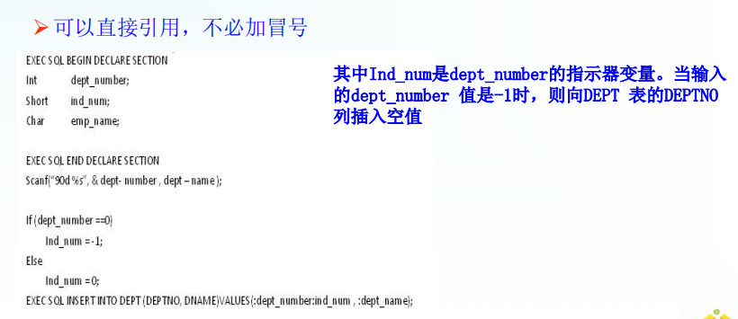

第八章 数据库编程
[TOC]
SQL编程技术可以有效克服SQL语句实现复杂应用方面的不足，提高应用系统和数据库管理之间的互操作性。
8.1 嵌入式SQL
8.1.1 嵌入式SQL的处理过程
嵌入式SQL的使用规定
-
在程序中要区分SQL语句与宿主语言语句
1 | EXEC SQL |
允许嵌入的SQL语句引用宿主语言的程序变量（共享变量），但有以下规定:
-
宿主变量出现于SQL语句中时，前面加（:）以区别数据库变量（列名）
1 | EXEC SQL select SNAME ,AGE |
-
共享变量的用法：先由宿主语言的程序定义，并用SQL的DECLARE语句说明
1 | EXEC SQL BEGIN DECLARE SECTION |
8.1.2 嵌入式SQL与主语言的通信
数据库工作单元与源程序工作单元之间通信
-
SQL通信区（SQLCA）（用EXEC SQL INCLUDE SQLCA定义）
-
主变量
-
游标
SQL通信区
-
SQL规定，SQLSTATE是一个特殊的共享变量，起着解释SQL语句执行状况的作用，由5个字符组成的字符数组的标准（ISO）返回信息码
-
SQLSTATE全0表示成功
主变量
-
嵌入式SQL语句中可以使用诸语言变量来输入或输出数据
-
在SQL语句中使用的逐语句程序变量简称为主变量
指示变量
-
一个主变量可以附带一个指示变量
-
一类SQL变量,它被用来管理与其相关联的宿主变量（即在SQL语句中充当输入或输出的变量）。主要用于处理空值（NULL）, 定义成2字节的整型，如SHORTINT。在SQL语句中引用时,其前也应加“ ： ”(冒号)，而且必须附在其相关联的宿主变量之后，在C语句中，可独立使用。当指示器变量为-1时，表示空值。
主变量和指示变量的使用方法
-
说明主变量和指示变量
1 | BEGIN DECLARE SECTION |
-
使用主变量
1 | Ø说明之后的主变量可以在SQL语句中任何一个能够使用表达式的地方出现 |
-
使用指示变量
1 | Ø 指示变量前也必须加冒号标志 |

建立和 关闭数据库连接
-
建立数据库连接：EXEC SQL CONNECT TO target【AS connection-name】【USER user-name】
-
关闭数据库连接EXEC SQL DISCONNECT 【connection】
8.1.3 不使用游标的SQL语句
-
主变量一次只能存放一条记录，而SQL语句可以产生多条记录，这就引入了游标的概念
游标
-
游标是系统为用户开设的一个数据缓冲区，存放SQL语句的执行结果
-
每个游标区都有一个名字
-
用户可以用SQL语句逐一从游标中获取记录，并赋给主变量，交由主语言进一步处理
8.1.4 使用游标的SQL语句
定义游标
1 | EXEC SQL DECLARE <游标名> CURSOR FOR <SELECT语句> |
打开游标
1 | EXEC SQL OPEN <游标名> |
游标推进语句
1 | EXEC SQL FETCH [NEXT|PRIOR|FIRST|LAST] FROM <游标名> INTO <共享变量名> |
游标关闭语句
1 | EXEC SQL CLOSE <游标名> |
释放游标
1 | DEALLOCATE cursor_name |
8.1.5 动态SQL

8.2 过程化SQL
8.2.1 过程化SQL的块结构
8.2.2 变量和常量的定义
8.2.3 流程控制
条件控制语句
循环控制语句
错误处理
1 | # 局部变量 |
8.3 存储过程和函数
8.3.1 存储过程
创建存储过程
1 | CREATE OR REPLACE PROCEDURE 过程名([参数1,参数2,...]) AS <过程化SQL块>; |
执行存储过程
1 | CALL/PERFORM PROCEDURE 过程名([参数1,参数2,...])； |
修改存储过程
1 | ALTER PROCEDURE 过程名1 RENAME TO 过程名2; |
删除存储过程
1 | DROP PROCEDURE 过程名()； |
8.3.2 函数
函数必须指定返回的类型
8.4 ODBC编程
8.4.1 ODBC概述
-
ODBC是一种标准，使数据库系统开放，能够实现数据库互联